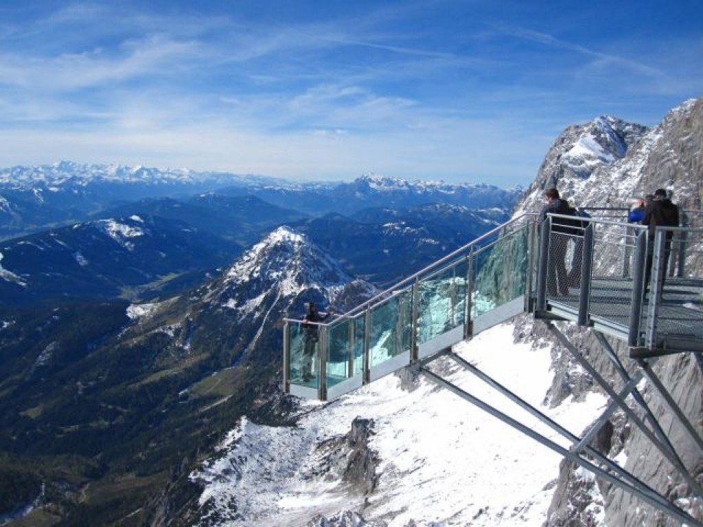

Alpy Salzburskie (niem. Salzburger Kalkalpen albo Salzburger Alpen)[1] – grupa górska, część Północnych Alp Wapiennych w Austrii i Niemczech. Najwyższym jej masywem jest Dachstein ze swoją kulminacją – Hoher Dachstein (2995 m n.p.m.)[2]. Zbudowana jest głównie z dolomitów i wapieni[3]. Są tu charakterystyczne rozległe, silnie skrasowiałe wierzchowiny i przepaściste stoki. Część grupy zajmuje płaskowyż Steinernes Meer, który należy do Alp Berchtesgadeńskich[4]. Jego najwyższy punkt to Selbhorn, który osiąga 2653 m n.p.m. Topografia Encyklopedia PWN sytuuje Alpy Salzburskie w Północnych Alpach Wapiennych między przełęczą Pyhrnpass[5] na wschodzie a przełomem rzeki Großache (Tiroler Ache, Kössener Ache) na zachodzie[3]. Partizione delle Alpi Alpi Salisburghesi (22) na mapie Alp z podziałem Partizione delle Alpi Tradycyjny francusko-włoski podział Alp, Partizione delle Alpi, z 1924 (wprowadzony 1926) umieścił Alpy Salzburskie, jako Alpi Salisburghesi (nr 22), między dolnym biegiem rzeki Ziller i Innem na zachodzie a rzekami Traun (dopływem Dunaju) i Salzabach (dopływem Anizy) na wschodzie, oraz między górnym biegiem Salzach (do St. Johann im Pongau) i górnym biegiem Anizy (do ujścia Salzabach) na południu a przedgórzem alpejskim (niem. Alpenvorland) na północy[6]. W porównaniu z zasięgiem podawanym przez PWN podział ten rozszerza obszar Alp Salzburskich na zachód, obejmując Kaisergebirge i Alpy Kitzbühelskie; na wschodzie zaś nie włącza do nich Totes Gebirge i masywu Grimming.
